SDAIA Academy · Exploratory Analysis and Visualisation
Building honest charts
Day 3: A chart as a specification: marks, encodings and scales chosen so that the picture and the numbers agree
Data Science Track4 teaching days + capstone day4 sessions · 4 labsDS-203
Today
Building honest charts
Session 1 · Marks, encodings and scalesA chart is data, marks, encodings and scales; choosing the channel for the comparison that matters
Session 2 · Small multiplesSmall multiples: when panels beat one crowded chart, and what shared and free scales each let a reader compare
Session 3 · Charts that misleadSix ways a correct number becomes a wrong impression, and the repair for each
Session 4 · Colour, labels and Arabic textColour that survives colour-vision deficiency and print, labels that carry the finding, and charts that read in Arabic and English
Review · Day 2
What does the director need beside this number?
A report says: "Branch C has the most late deliveries: 310 this quarter." Before the sentence is printed, what has to stand beside 310?
The average number of late deliveries per branch
The number of late deliveries in the quarter before
A p-value for the difference between the branches
The deliveries Branch C made, so 310 becomes a rate
Why. A count ranks by size. "Most late deliveries" needs its denominator before it can mean "worst".
Session 1
Marks, encodings and scales
Describe any chart as data, marks, encodings and scales
Rank position, length, area and colour by how precisely they are read
Build a layered chart from a written specification
01
The grammar of graphics
Every chart is four decisions
Part
The decision
In lab 3.1
Data
what one row is
one site: complaints, visitors, rate
Marks
the shape drawn for each row
a circle, a rule, a text
Encodings
which column drives which visual channel
rate → x, site → y, visitors → size
Scales
how values become positions, sizes and colours
x from zero; sites sorted by rate
Why think this way. "Bar chart" and "scatter plot" are names for a few common combinations. The four parts describe all of them, and tell you what to change.
Not all channels are read equally well
Give the most precise channel to the comparison that matters
Position on a common scalemost precise
Length
Angle and slope
Area
Colour intensityleast precise
Colour hue tells categories apart; it does not order them.
A small difference shows in position long before it shows in area or shade.
Lab 3.1, steps 2 and 3
The written specification and the code have the same four parts
alt.Chart(rates).mark_circle().encode( # data, mark
x=alt.X("per_thousand:Q", # encoding: a quantity
scale=alt.Scale(zero=True), # scale: from zero
title="Complaints per thousand visitors, 2023 to 2025"),
y=alt.Y("site:N", sort="-x", title=None), # a name, sorted by x
).properties(title="Complaints per thousand visitors by site")
:Q a quantity, :N a name, :O an order, :T a time. The type picks the default scale.
Sorting and titles are part of the specification, not decoration.
Lab 3.1, step 4
Layers share the data and the scales, and add one mark each
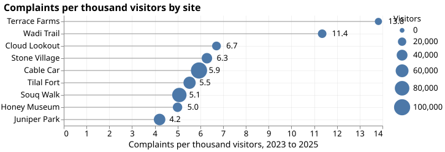
Rule, circle and text: three layers.
The rate has position; the visitors have area.
The largest circle is fifth from the top.
One chart now says what lab 2.2 needed a paragraph for.
alt.layer(rule, dot, label)
Lab 3.1, step 5
Change one part and you can say what was gained and lost
The same data, x and y, as bars.
A bar's length already carries the rate, so size is taken: the visitors drop off the chart.
Bars are familiar and read fast.
A bar is measured from its base. A point is read by its place.
The rule that follows. Bars and areas need an axis from zero. Points and lines may use an axis that starts elsewhere, if the chart says so.
Checkpoint
Which channel for which variable?
A chart must let a manager compare average waiting time across 12 clinics, and also show roughly how many patients each clinic sees. Which specification serves that?
Clinic on y, patients on x, waiting time as circle size
Clinic on y sorted by wait, waiting time on x, patients as circle size
Clinic on y, patients on x, waiting time as colour intensity
A pie chart with one slice per clinic, sized by waiting time
Why. The comparison the reader must make gets position on a common scale; the context gets a weaker channel.
Lab 3.1 · 25 min
A chart from a written specification
Rebuild one chart from a written specification: complaint rates by site as marks, encodings, scales and a text layer.
Read the specification: data, marks, encodings 3 min
The base chart: position for the rate 6 min
Sort, start the scale at zero, write the titles 5 min
A second encoding and a text layer 6 min
Change one mark and say what the reader loses 3 min
Write the reading 2 min
✱ Stretch: Write the specification of a chart from lab 1.3 in the same form
Session 2
Small multiples
Replace a crowded chart with small multiples
Choose shared scales to compare levels and free scales to compare shapes
State the scale choice on the chart
02
Lab 3.2, step 1
Five lines on one panel answer one question and hide four
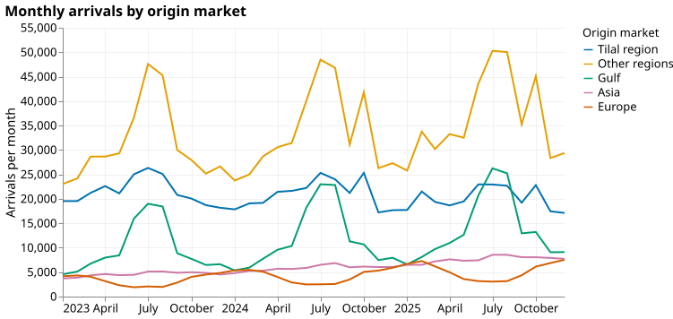
Monthly arrivals by origin market.
You can read which market is largest.
When does Europe peak? Does Asia have a season? The bottom tenth of the chart holds three lines.
The legend has to be decoded for every line.
Lab 3.2, step 2
Small multiples: the same chart, one panel per group
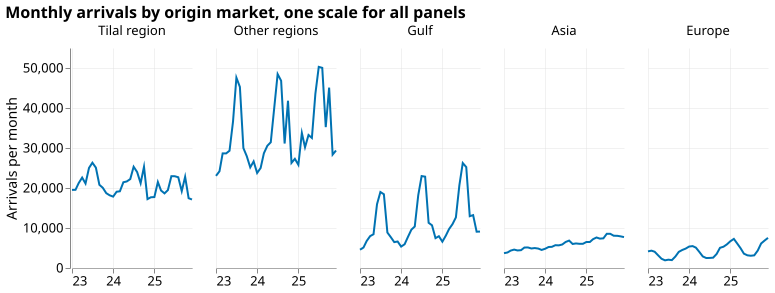
One y scale for all panels.
No legend: each panel is labelled. Once one panel is understood, all are.
A shared scale compares levels across panels: who is big.
Asia and Europe are still flat lines.
Lab 3.2, step 3
A scale per panel shows each group's shape
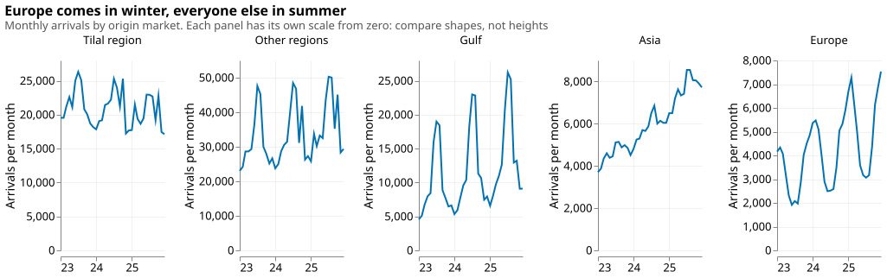
Each panel has its own scale from zero.
Europe peaks in December, in every other market's low season.
Asia has almost no season and the steepest growth.
Heights can no longer be compared across panels, and the chart says so.
Lab 3.2, steps 4 and 5
The question chooses the scale
The reader should compare
Scales
Because
levels: which market is largest
shared
heights mean the same in every panel
shapes: who has a season, and when
free, from zero
each shape fills its panel
growth: who grew fastest
shared, on an index
every line starts at 100
What goes wrong. Free scales with no note. The reader compares heights across panels anyway and concludes that all markets are the same size.
When panels stop helping
Small multiples trade exact comparison for clarity
They suit
Three to about twenty groups; one simple chart repeated; a reader who compares patterns.
They strain
Two lines whose gap is the message: put those on one panel, where the gap has position.
They need
A deliberate order of panels, identical axes in type, and few tick labels on each.
A useful middle way. Draw every group in grey in every panel and highlight one. The reader gets the shape and the place among the others.
Checkpoint
Shared or free?
Weekly sales of 8 product lines are drawn as small multiples. The largest line sells fifty times the smallest. The manager asks: "Which lines have a December peak?" Which design answers that?
A shared y scale, so that all eight panels can be compared
A single panel with eight lines, one colour for each line
A y scale per panel from zero, with a note that scales differ
A y scale per panel, fitted tightly to each line's range
Why. The question is about shape, so each panel gets its own scale; from zero, so that a peak keeps its true proportion; with a note, so that heights are not compared across panels.
Lab 3.2 · 25 min
Arrivals in small multiples
Facet arrivals by origin market, draw the panels with shared and with free scales and choose the one that answers each question.
What each version answers: peak month and peak-to-trough ratio 5 min
Choose, order the panels and say the scale on the chart 4 min
Write the reading 2 min
✱ Stretch: Index each market to 2023 = 100 and compare with the free-scale version
Session 3
Charts that mislead
Name the fault of a misleading chart
Repair a chart by changing its scale, window, measure or encoding
Say what a reader concludes before and after the repair
03
The board's earlier report
Six charts, every number correct, every impression wrong
Fault
What it does
Repair
Cut baseline
a bar's axis does not start at zero
start at zero, or change the mark
Picked window
a few periods chosen out of many
show the whole series
Count for rate
counts compared across unequal groups
divide by the denominator
Two axes
two scales stretched until shapes agree
one variable against the other
Running total
a cumulative line, which can only rise
plot the amount per period
Uneven steps
unequal periods drawn as equal steps
equal periods on a time axis
Fault 1 · Cut baseline
"Satisfaction collapsed in 2025"
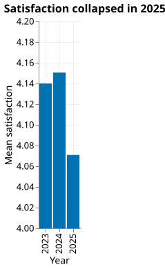
As published: the axis runs from 4.0 to 4.2.
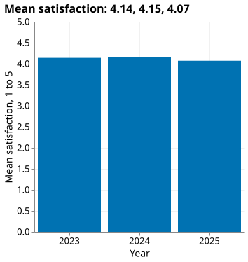
Repaired: bars from zero.
A bar says "this much". Cut the base and the 2025 bar is half the 2024 bar for a fall of 2%.
If 0.08 matters, use points on a stated axis, with intervals.
Fault 2 · Picked window
"Arrivals up 37% in a year"
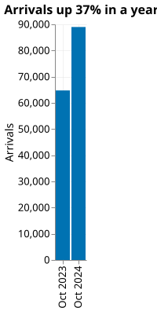
As published: two months of thirty-six.
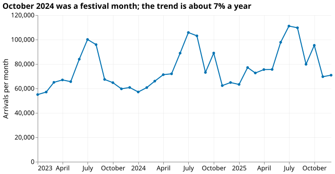
Repaired: every month.
October 2024 was the first Honey Festival. The typical yearly growth is about 7%.
Ask of any two-point comparison: why these two points?
Fault 3 · Count for rate
"The Cable Car is our problem site"
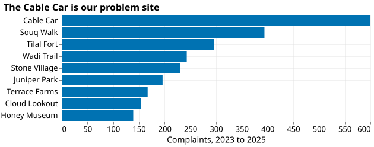
As published: complaints.
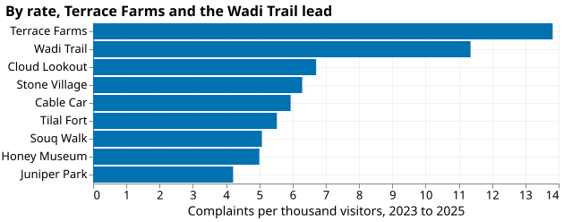
Repaired: per thousand visitors.
The picture of yesterday's lab 2.2: the busiest site leads any count.
The repair changes the measure, not the drawing.
Fault 4 · Two axes
"Hotels follow the sites exactly"
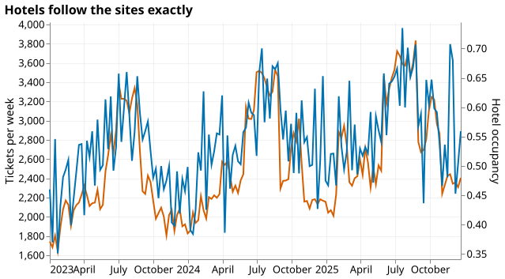
As published: two y axes, each fitted to its line.
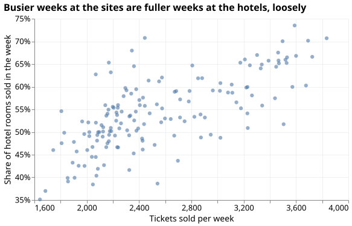
Repaired: one variable against the other.
With two free axes, any two series can be made to overlap. Where they cross means nothing.
The scatter shows the relation at its true strength: 0.70, loosely.
Fault 5 · Running total
"Local visits keep climbing"
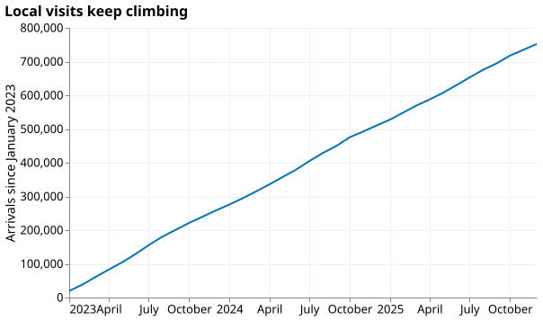
As published: arrivals since January 2023.
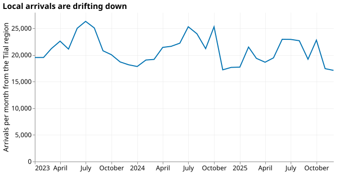
Repaired: arrivals per month.
A running total rises whenever anything arrives at all. It cannot show a fall.
Local arrivals fell 6% over two years: 258,000 in 2023, 242,000 in 2025.
Fault 6 · Uneven steps
"Arrivals fell off a cliff in 2025"
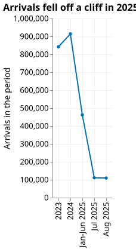
As published: years, a half year and two months.
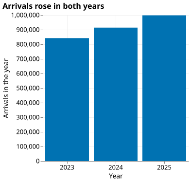
Repaired: three periods of equal length.
A year, half a year and a month were drawn as equal steps.
Yearly arrivals: 842,000, 914,000, 998,000.
Lab 3.3, step 4
Five questions before a chart goes out
Does a bar or an area start at zero?
Is the whole period shown, in equal steps?
Is it the right measure: rate, per period, per unit?
Is there one y axis?
Does the title say what the chart shows, and no more?
The test of a repair
Write what a reader concludes from the chart before and after. If the two sentences agree, the fault was cosmetic. In all six cases here they disagree.
Checkpoint
Name the fault
A slide shows app downloads "since launch" as a line that rises every month, under the title "Growth is accelerating". Monthly downloads have in fact been falling for half a year. Which fault is this, and which repair?
Cut baseline: restart the y axis of the line at zero
Picked window: add the months before the launch
Two axes: move downloads to a second panel
Running total: plot the downloads of each month
Why. A cumulative line can only rise. "Is it growing" is a question about the amount per period, so plot that.
Lab 3.3 · 25 min
Repair six misleading charts
Repair six misleading charts from the board's earlier report and name each fault: a cut baseline, a picked window, counts for rates, two axes, a running total and uneven time steps.
Repair charts 1 to 3: baseline, window, rate 9 min
Repair charts 4 to 6: two axes, running total, time steps 9 min
Write what a reader now concludes 2 min
✱ Stretch: Find a seventh chart in your own work and name its fault
Session 4
Colour, labels and Arabic text
Choose a palette by the type of variable and test it for colour-vision deficiency
Add a second channel so that colour is never the only carrier
Produce one chart in Arabic and in English from the same code
04
Colour is an encoding
The type of the variable chooses the kind of palette
Categorical
Names with no order: origin market, site. Distinct hues of similar weight. Five to seven at most.
Sequential
Low to high: a count, a rate. One hue from light to dark, as in the heatmap of lab 2.1.
Diverging
Two directions from a midpoint: above and below a baseline. Two hues meeting in a neutral colour.
What goes wrong. A rainbow for a quantity: the eye sees bands where the data has none. Or a light-to-dark ramp for names: the reader sees an order that does not exist.
Lab 3.4, step 1
Test the palette for colour-vision deficiency
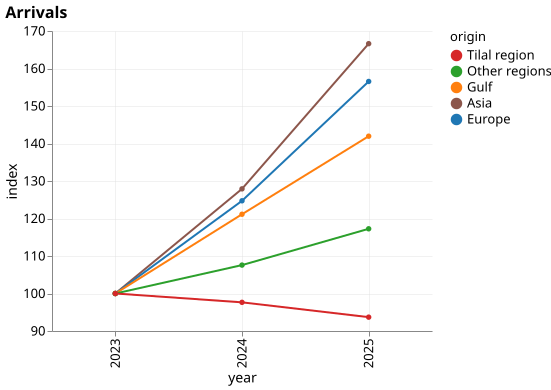
Under red-green deficiency the draft's red and green are 7 units apart: hard to tell.
The Okabe-Ito palette keeps every pair above 18.
Do not trust the look on your own screen.
Lab 3.4, step 2
Colour is never the only carrier
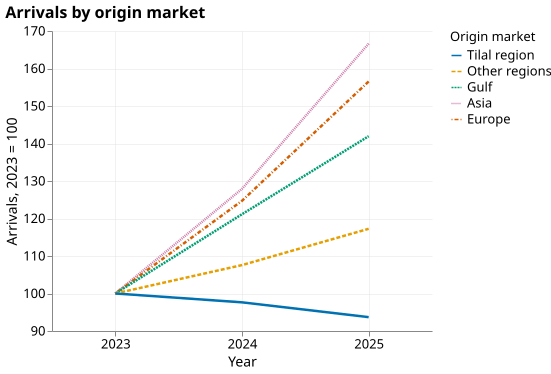
Safe palette, and a dash pattern per market.
A second channel repeats the first: dash for lines, shape for points.
Better still, label the lines directly at their ends and drop the legend.
The test: print the chart in grey. Can each line still be named?
The words on a chart
The title states the finding; the rest says how to read it
Text
Draft
Finished
Title
Arrivals
Arrivals grew fastest from the smallest markets
Subtitle
none
Yearly arrivals by origin market, 2023 = 100
y axis
index
Arrivals, 2023 = 100
Legend
origin
Origin market
A title that names the finding can be checked against the chart. "Arrivals" cannot be wrong, or useful.
Units, the base of an index, the period and the source belong on the chart, since charts get copied without their page.
Lab 3.4, step 3
The words live in a file; the chart is drawn by one function
L = U.js("labels.json") # every text, in Arabic and Englishdefchart(data, lang):
T = L["text"][lang] # title, subtitle, x, y, legend
d = data.assign(origin_label=data["origin"].map(L["origins"]) if lang == "ar"else data["origin"])
return alt.Chart(d).mark_line().encode(
x=alt.X("year:O", title=T["x"]), y=alt.Y("index:Q", title=T["y"]),
color=alt.Color("origin_label:N", title=T["legend"]),
).properties(title=alt.Title(T["title"], subtitle=T["subtitle"]))
The data keeps its own column; the labels are mapped at drawing time.
Two charts copied and edited by hand drift apart at the first correction.
Lab 3.4, step 4
In Arabic the words move; the data does not
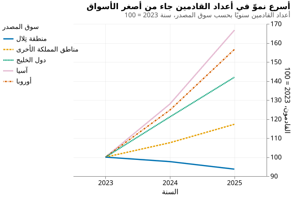
The Arabic version, from the same function.
Title anchored at the right; y axis on the right.
House style of this course: Western digits, and time from left to right, in both versions.
Let the text engine shape and order Arabic. Never reverse or reshape strings by hand.
Checkpoint
Which change comes first?
A line chart of four regions uses red, green, blue and orange lines and a legend. It will be printed in a bilingual annual report. Which single change helps the most readers?
Label each line at its end, and give each its own dash pattern
Make the four lines thicker so that the colours show better
Use four shades of one blue, from light to dark
Add the region names to the legend in both languages
Why. Direct labels and a second channel work in grey print and for readers with a colour-vision deficiency. A legend that depends on colour alone does not.
Lab 3.4 · 25 min
One chart, two languages, safe colours
Make one chart readable in Arabic and English and colour-blind safe: test the palette, add a second channel and draw both language versions from one function.